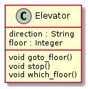
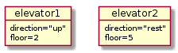

Introduction
Questions
What is the Purpose of Formalism in Computer Science?
What is software development life cycle
There seem to be many concepts in this course. What do they mean?
Objectives
We’ll
give an introduction to the week
give some introduction to concepts used in the course
give some introduction to handy tools for the software developer
try to set up the mindset to find the rest of the week interesting and useful!
Instructor note
Theory
Demos/type-alongs
Exercise
Hint
We start with a more theoretical introduction covering the software and tools and mindsets for software development.
The second part follows the development of a simple software project.
The exercises and type-alongs are mostly based on copy-pasting code.
So you don’t need to program yourself or understand the python syntax used.
The important aspect is the workflow!
Deeper material not covered in the lessons today can be found in the extra reading part.
Preliminary schedule 1st day
Topic |
Time |
|---|---|
Syllabus |
9.00 |
Intro |
9.20 |
Coffee break (15 min) |
9.45 |
SDLC tools |
10.00 |
Planning phase (incl. break) |
10.45 |
Start the project |
11.15 |
Start with coding (begin) |
11.45 |
LUNCH |
12.00 |
Start with coding (cont’d) |
13.00 |
Iterations and Git (incl. break) |
13.30 |
Deploy and documentation |
14.30 |
Coffee break |
15.00 |
(Collaboration) |
15.15 |
Summary |
15.25 |
Reflection |
15.35 |
END |
16.00 |
What is software?
Wikipedia
set of computer programs and associated documentation and data.
This is in contrast to hardware, from which the system is built and which actually performs the work.
User-written software: End-user development
Users create this software themselves and often overlook how important it may be to others.
Some software concepts
program
script (directly interpreted at run time)
tool
model
application
Scripting vs programming
Python is an interpreted language.
Python uses an interpreter to translate and run its code. Hence Python is a scripting language.
Programs written in C++ are compiled and then the compiled code runs to generate the output.
Hence, C++ is a programming language and not a scripting language, since scripting languages are directly interpreted at run time and no prior compilation of the code takes place.
Note
We will not be very definite in the course in when to use scripting, program or tools
Outcome of a Program
Correct
and flawless
Efficient
Utilize the computer system’s resources
Reusable
Finished components
Lower development costs
Faster
Higher quality
packaging technology
Changeable
Maintenance cost
Fix errors, bugs
Adapt to new requirements
Independent modules
Encapsulation/information hiding
Independent modules
Modular coding is really good!
Object-oriented or functional programming, see below.
Modularity could be within a program but also for a workflow.
Workflow
Here’s an example of a bash script taking care of runs with executable files.
Functional vs. object-oriented programming
Object oriented programming
Object-oriented (OO) programming is
a mindset of mimicking the real-world as:
entities (
objects) that are differentor share attributes with each-other (within a
class)info-hiding mindset…


Note
Object orientation (OO) in some programming languages
OO (built-in classes)
C++
Java
Python
Julia
OO features
Fortran 2003-
MATLAB
Perl
PHP
OO object-based (but not class-based)
Javascript
Functional programming
More classical as it is more focused on the algorithms
Functions
Modules: a way to gather functions with similar functionality
Also to some extent info-hiding mindset
To sum up
At its simplest, functional programming uses immutable data to tell the program exactly what to do.
Object-oriented programming tells the program how to achieve results through objects altering the program’s state.
Both paradigms can be used to create elegant code.
See also
More on Tuesday: Object-orientation
More on Tues: Algorithms
More on Friday: Modular programming
Your scripting/programming background
{kind=link}
Different types of Scientific software:
analysis of data
statistics
figures
visualization
tools for process data
refining data (formatting)
bioinformatics
workflows
modelling (mimic the reality)
simulations time-varying bahaviour of a system
mathematical models of relationships among variables in a system
decision assistance
Discussion
What do you develop for?
Use Menti
Exercise
Planet application
Make a program that simulates the Earth’s change of orbit due to the interaction with other planets-
This was done in MATLAB with no thought of best practices, just trying to solve the problem!
Code
%planet
clear all
close all
%constants
G=6.6743e-11
AU=149.597871e9
AU1=150.8e9
dJ=5.203*AU
mj=5.97219e24
mJ=1.899e27
M=1.9891e30
day=86400;
year=31556926;
%init
%Earth
v0=AU*2*pi/year;
Fg=G*M*mj/AU^2
ag=Fg/mj
Fc=mj*v0^2/AU
ac=Fc/mj
%Jupiter
v0J=dJ*2*pi/(11.86*year);
FgJ=G*M*mJ/dJ^2
agJ=FgJ/mJ
FcJ=mJ*v0J^2/dJ
acJ=FcJ/mJ
L=10e4;
%def
x=zeros(365*L,1);
y=zeros(365*L,1);
xJ=zeros(365*L,1);
yJ=zeros(365*L,1);
u=zeros(365*L,1);
v=zeros(365*L,1);
uJ=zeros(365*L,1);
vJ=zeros(365*L,1);
%init
x0=AU1;
y0=0;
u0=0;
x=x0;
y=y0;
u=u0;
v=v0;
x0J=dJ;
y0J=0;
u0J=0;
xJ=x0J;
yJ=y0J;
uJ=u0J;
vJ=v0J;
for i=1:365*L
if rem(i,365*1000)==0
i/365
end
x(i+1)=x(i)+day*u(i);
y(i+1)=y(i)+day*v(i);
xJ(i+1)=xJ(i)+day*uJ(i);
yJ(i+1)=yJ(i)+day*vJ(i);
ax=-G*M/abs(x(i+1)^2+y(i+1)^2)^(3/2)*x(i+1);
ay=-G*M/abs(x(i+1)^2+y(i+1)^2)^(3/2)*y(i+1);
dxJ=x(i+1)-xJ(i+1);
dyJ=y(i+1)-yJ(i+1);
axjJ=-G*mJ/abs(dxJ^2+dyJ^2)^(3/2)*dxJ;
ayjJ=-G*mJ/abs(dxJ^2+dyJ^2)^(3/2)*dyJ;
ax=ax+axjJ;
ay=ay+ayjJ;
u(i+1)=u(i)+ax*day;
v(i+1)=v(i)+ay*day;
xJ(i+1)=xJ(i)+day*uJ(i);
yJ(i+1)=yJ(i)+day*vJ(i);
axJ=-G*M/abs(xJ(i+1)^2+yJ(i+1)^2)^(3/2)*xJ(i+1);
ayJ=-G*M/abs(xJ(i+1)^2+yJ(i+1)^2)^(3/2)*yJ(i+1);
uJ(i+1)=uJ(i)+axJ*day;
vJ(i+1)=vJ(i)+ayJ*day;
end
figure(1)
plot(x,y)
hold on
plot(xJ,yJ)
plot (0,0,'o')
axis equal
rj=(x.^2+y.^2).^.5;
rJ=(x.^2+y.^2).^.5;
aJ=max(rJ)
bJ=min(rJ)
eJ=1-2/(aJ/bJ+1)
relJ=(aJ/bJ-1)
l=1000;
for i=1:L/l
range=(i-1)*L+1:i*L;
a=max(rj(range));
b=min(rj(range));
e(i)=1-2/(a/b+1);
rel(i)=(a/b-1);
end
%return
figure(2)
plot(1:L/l,e)
What are the problems?
Discuss!
Readability?
Correct?
Efficient?
Reusable?
Changeable?
Software Development Life Cycle (SDLC)
We need a workflow in our programming projects!
Some common steps
Planning
Analysis and design
Development
Source control
Algorithms
In-code documentation
Optimization
Parallelism
Test
Development and maintenance
Documentation
Reproducibility and sharing
… and Iterations
Agile development
Division of tasks into short phases of work and frequent re-assessment and adaptation of plans.
See also
More about life cycles in next session and later this week
Summary of Introduction
Now after the overview you are ready to dig deeper in the topics and try it out yourself!
Keypoints
A program shall be or have content/components that is:
Correct
Efficient
Reusable
Changeable
Software development is both series of steps:
Requirements
Analysis and design
Development
Test
Development and maintenance
… and iteration of these